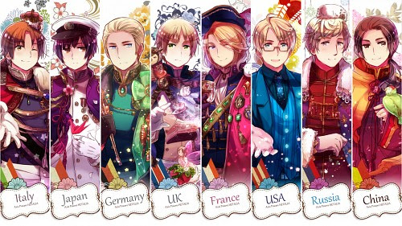

From The Series
These are the characters that were part of the Allied Forces during the Second World War and the First World War.
China (中国, Chūgoku) is a main character in the series Hetalia: Axis Powers, who is part of the Allied Forces.
In 2008, Himaruya gave human names to some of the characters and he received the name Wang Yao (王耀, Wanyao or Ouyou, 王耀, Wáng Yào).
He has dark hair tied back into a ponytail, and is often shown wearing a deep green Chinese military uniform with a red armband (though it was colored tan in one color spread). In other instances, he wears a green mandarin jacket with yellow pants, or a red one with white pants as shown in the Hetalia trading card game.
He has a scar on his back, a reminder of when Japan attacked him when they were younger, and a panda-shaped birthmark above his left buttock.
One of the apparent oldest nations, he happens to be extremely superstitious, but not at all religious. He tries to act as an older brother to the other Asian nations, but fails to be treated as one. Somewhat like America, he likes to be in charge or have what he wants. He tends to end his sentences with the suffix "-aru" (a Japanese stereotype of Chinese accents), though sometimes he ends them with "-ahen" (opium) when conversing with England. He would only use "aru" when speaking Japanese. He has a companion named "Shinatty-chan", an old man in a Hello Kitty knockoff costume.

Russia (ロシア, Roshia) is a main character in the series Hetalia: Axis Powers.
In 2008, Himaruya gave out human names to some of the characters and he received the name Ivan Braginsky (イヴァン・ブラギンスキ, Ivan Buraginsuki, Russian: Иван Брагинский).
Russia is the tallest of the Allies, as well as the tallest of all the nations alongside Sweden. Russia wears a long, heavy tan coat, dark green pants, brown gloves, and a long tan or pink scarf; in the mini-drama CD included with his character album, he mentions to Japan that his scarf is a body part and therefore he cannot take it off. This, though, might just be an excuse so he will not have to take it off, seeing as how he didn't wear it as a small child before Ukraine gave it to him, and that in some artwork he is actually seen with it off. He has a round, childish face with a more prominent nose, and tends to carry around a bottle of vodka, a sunflower, or a faucet pipe. His hair is a light beige-blond, and his eyes are violet (purple), though they were initially colored blue in early color artwork by Hidekaz Himaruya.
A large young man who is seemingly big-hearted and innocent but is in reality childishly cruel often coming off as villainous to those who fear him. He comes off as intimidating without even saying a word, his gentle smile and disposition only intensifying the aura of dread which seems to constantly hang over him. In a recent profile from the third volume of the published manga, Russia was described as gentle and naive, and not malicious, but insane. Russia ends many of his sentences with 'da', the Russian word for 'yes', although in Japanese it is often used to confirm the topic of the sentence, as an informal form of 'desu', the ubiquitous form of 'to be'.

England (イギリス, Igirisu) is a main character in the anime and manga series Hetalia: Axis Powers. He represents both the United Kingdom and England, and is part of the Allied Forces. The English dub refers to him as Britain, a shortened and often informal way to refer to the United Kingdom.
In 2008, Himaruya gave out human names to some of the characters and he received the name Arthur Kirkland (アーサー・カークランド, Āsā Kākurando).
England has messy, short blond hair and lime-green eyes. According to France, he's rather slender. In World War II, he dresses in a green dress military uniform, which consists of a green jacket, a brown Sam Browne Belt (the over-the-right-shoulder-and-waist-belt), green pants tucked into his boots, off-white shirt (sort of off-yellow in the manga and webcomic in the colored drawings), a tie that's a shade of green that's slightly darker than the rest of his uniform, and brown boots that almost come up to his knees.
England is a fanciful, blunt, obstinate former pirate who used to torment Spain. In modern times he claims to be a gentleman; however, he is cynical, sharp-tongued, prone to rough speech, and yearns for the golden years. He often uses British vocabulary, such as wanker, Yank (Yankee), bloody, twit, and git. He is noted for being horrible at cooking which has caused America, his former charge, to have "bad" taste in food.
France (フランス, Furansu) is a main character in the series, Hetalia: Axis Powers.
In 2008, Himaruya gave human names to some of the characters and he received the name Francis Bonnefoy (フランシス・ボヌフォア, Furanshisu Bonufoa).
France has shoulder-length blond hair and blue eyes, and has a slight amount of facial hair which he believes makes him look like a "big brother" (it is said to represent the Gorges du Tarn, or Tarn Gorges). He wears a long blue coat and matching capelet, with red pants and brown boots. He is often depicted with a rose, which is also used to censor his genitals in his nude scenes.
France was once a large nation, but after Napoleon Bonaparte had died, he was no longer good in wars and instead attracted tourists to his country with his wine. He has an intense rivalry with England, and loves to argue with him over trivial topics (one example is arguing over "who is more perverted"). His hobbies are manipulation activities, agriculture, fashion design, sketching, singing, and telephones, as well as wandering around the art museums and fashion boutiques of Paris. He likes places that are a little odd or chic.

America (アメリカ, Amerika) is a main character in the series Hetalia: Axis Powers and leads the Allied Forces.
In 2008, Himaruya gave out human names to some of the characters and he received the name Alfred F. Jones (アルフレッド・F・ジョーンズ, Arufureddo F. Jōnzu).
He has short blond hair with a cowlick, representing Nantucket, sticking up and blue eyes. He wears a tan uniform and a brown bomber jacket with a "50" on the back for the fifty states. His glasses are said to represent the state of Texas. America is often shown holding a hamburger or a large-sized soft drink, usually a cola, and flashing a thumbs-up.
America is a cheerful, energetic, yet somewhat conceited young man who is obsessed with heroes, justice, and freedom. He has the habit of sticking his nose into everyone else's business, which causes him to have difficulty making friends. He loves hamburgers and junk food, to the point of an obsession, and can even eat strange and inedible things due to inheriting England's sense of taste (or lack thereof).

Japan (日本, Nihon, Nippon) is a main character in the series Hetalia: Axis Powers. He is a part of the Axis Powers.
In 2008, Himaruya gave human names to some of the characters, and he received the name Honda Kiku (本田菊).
e is a short, slim man with short black hair, dark brown eyes, and is often depicted wearing a white naval uniform with black and gold accents and a sword often at his left hip. His first appearance in both the anime and the published manga shows him briefly wearing a more ornate version, with gold epaulets and frog clasps down in the front of the jacket. When he first appeared in the webcomic series, he wore a standard gray/black uniform until sometime after joining the Axis. He can be seen wearing this uniform during more formal occasions.
In some of Himaruya's official art, his hair is dark brown, and his eyes are a lighter brown.
A shy, quiet, and hard-working man, Japan does not know very much about the outside world and needs time to adjust to other people. He is very curious and interested in learning things from other nations. His distinct island customs may seem mysterious to others, although he finds them perfectly normal. He tends to have the behavior of an "old man" and was a hikikomori for a long time, having spent about 250 years in isolation and keeping contact only with Netherlands. Though he appears horrified at the idea of nudity or intimate contact, he has erotic woodcuts in his possession, which he tries to hide secretly between his non-erotic books. Japan also voiced his preference for 2D girls over 3D girls to England, Greece, and France in one strip, hinting that he has an otaku side. His otaku side is further shown when he decides to buy a Shonen Jump magazine in his preparations for the New Year.

Germany (ドイツ Doitsu) is a main character in the series Hetalia: Axis Powers and leads the Axis Powers. In 2008, Himaruya gave out human names to some of the characters and he received the name Ludwig (ルートヴィッヒ, Rūtovihhi).
Germany is a tall, muscular man, with blond slicked back hair and blue eyes. He wears either a green Wehrmacht, or a Waffen-SS officer's uniform with a Knight's Cross of the Iron Cross on the collar. In early webcomic chapters that take place during WWI, he wore a gray-blue Waffenrock uniform (as seen in colored artwork) characteristic of the German army uniform of that period (the color of this uniform was changed to green for the anime). However, the black cuffs and white piping may also suggest Germany wears a Schutzpolizei administration uniform.
He is a serious and efficient man who always abides by the rules. Germany has to deal with an unreasonable boss as well as the troublemaking Italy. He does not tolerate any mistakes, is a neat freak, and happens to have a rather pessimistic nature. His hobbies include making sweets (including his secret love of baking cakes), reading, and walking his dogs. In Episode 08, Italy admits to England, America, and France that Germany is a fan of BDSM. It was said in an earlier profile that his pent-up anger is released when he has beer. He is also shown to become somewhat chatty and relaxed when intoxicated.

Italy (イタリア Itaria) is a main character in the series Hetalia: Axis Powers. He is the representation of the northern part of Italy and is part of the Axis Powers. He is also referred to as Italia Veneziano (イタリア・ヴェネチアーノ Itaria Venechiāno). In 2008, Himaruya gave human names to some of the characters and he received the name Feliciano Vargas (フェリチアーノ・ヴァルガス Ferichiāno Varugasu).
He has short brown hair and brown eyes, with a curl on the left side of his head, which acts as his erogenous zone when stroked or pulled. He is 172 cm tall, despairing at the 8 cm difference between him and Germany, as seen in episode 11. He wears a blue WWII military uniform, a black shirt and tie, and black boots. In earlier strips, his hair was shown smoother, and his curl was drawn smaller, a change which was noted in a gag illustration. Italy's eyes were depicted as gray in the earliest artwork of him, but quickly changed to brown.
Italy is a cheerful, energetic man, who went from being the kin of Ancient Rome, to an irresponsible crybaby. He loves pasta, pizza, gelato, and cheese. Although he relies on Germany a lot, Italy doesn't really listen to what he says and instead daydreams or wanders off. His hobbies include cooking, siestas, painting, singing and also flirts with any cute girl he sees.